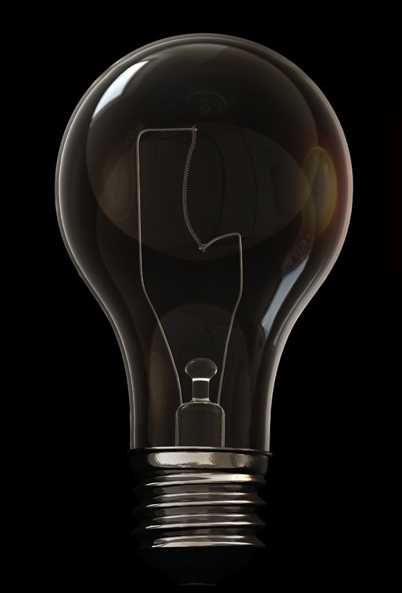
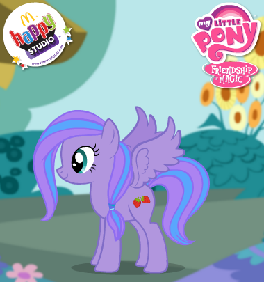
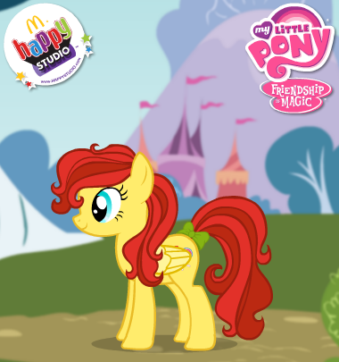
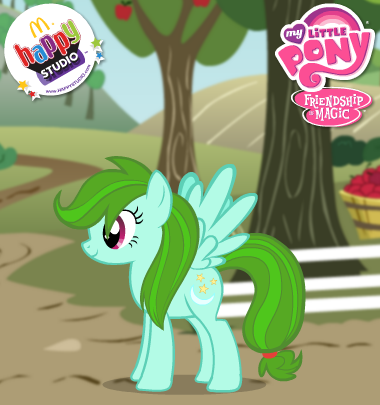

Прохождение теста
1. Что ты делаешь в свободное время?
Здравствуй. Читаю книги, а так же пишу стихи. Мне очень нравится этим заниматься.
И тебе привет! Играю на гитаре(или же на другом музыкальном инструменте) и слушаю музыку. Музыка - моя страсть.
Хаю-хай! Жрать, конечно же. Вкусняшки часто поднимают мне настроение.
Тусоваться с моими поклонниками и фанатами.
2. С этим разобрались. А какой жанр музыки ты предпочитаешь? :з
Классику. Она расслабляет.
Рок, металл и ничего больше.
Хип-хоп, йоу.
Гламурный поп.
3. Это хорошо.~ А ТЕПЕРЬ ВЫБЕРИ ПОНЯШУ!!! *О*
Вот эта сиреневая няша.

Эта милашка круче всех.

Зеленые поняхи рулят! *о*

Не люблю пони. :с
4. Какое животное ты бы хотела/хотел приютить у себя?
Белого и пушистого кролика.
Рыбки. За ними не нужно особо ухаживать.
СВИНКА! *О* Пухлая, розовая, с пяточком.
Ненавижу животных.
5. Опиши себя.
Тихая/Тихий.
Взрывная/Взрывной.
Лени~ивая/Лени~ивый.
Властная/Властный.
Жми и узнай результат!